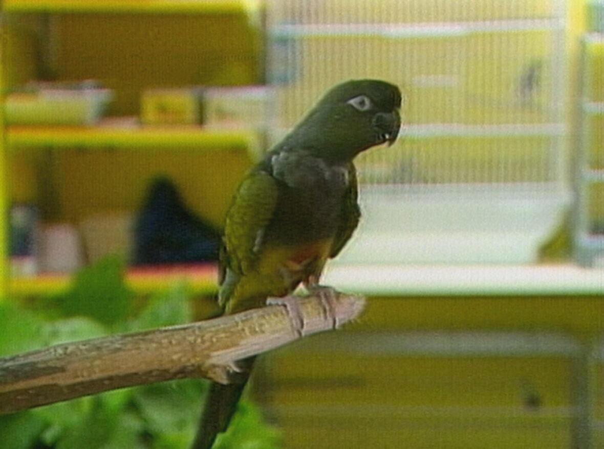

That thought hit me after the 60th afternoon sitting in my bedroom...
You see, I'm usually frantically dashing between classrooms at this time of day. That was until the COVID-19 lockdown came. Since then, school has been a series of Zoom calls. One tedious current of information after another… flowing slowly from my teacher's screen to mine.
It was at that moment I realised that I hadn't had an original thought in a
very…
very…
VERY...
long time. 😨
But how does that apply to ME? I just decided what to eat myself!
And so had I. But those simple decisions weren't the problem.
The problem was that it'd been a long time since I'd just STOPPED to look away from the screen. To observe the tiny details around me. To just ask a question out of curiosity, not to memorise another definition for a test.
So after that 60th slow afternoon, I wondered how I could start thinking for myself again. And then it came to me:
The easiest way to think for yourself is to have unique experiences to think about.
Let's say I'm the only person who's hosted a ballet workshop after two days of Youtube tutorials and having never taken ballet lessons… (Which I have, but that's a story for another day. 😉) That's something I can think for myself about because not many people have experienced it to think about it.
Still, I bet some of you are now thinking, "Of course… tell me ALL about how I can gain unique experiences to think about during a lockdown."
Fair point… but luckily, you don't have to LIVE through experiences yourself to know about them. What if you could just DISCOVER unique experiences yourself? Cue the magic of the 🌈✨Internet ✨🌈
That afternoon, I tried to think about what I could discover that I would never otherwise search for. My mind wandered to movies I saw when I was a kid, where there would be epic bank heists with robbers crawling through air ducts. And I asked the question that 99.999% of humans weren't thinking about at that moment: "Can you actually go through air ducts like that???"
That simple (but original) thought took me all the way back to 1988 and this one parrot…
(Source: Midday/CBC Archives - 2018)
See, this isn't just any parrot. This is Charlie. Charlie's a bilingual parrot. And he's worth $10,000.
He's one of 11 rare birds that was stolen from a pet shop in Montreal in 1988. And that was one of a series of high-profile bird robberies in the area in that year. There was no sign of how the thieves got in and out, knowing EXACTLY which birds to target. Except for some feathers in the store's air duct… 🐦
So What? Why should I care about some weird bird heist???
Well, what it got me thinking about was, "Why aren't there any movies about bird heists like this?" (If you don't count the ending in Mr. Popper's Penguins. 😉) And who makes the decisions about what type of heists to put in movies to begin with? And how do they know what people like me will be interested in?
That's the thing about thinking for yourself:
Thinking for yourself opens up more questions than answers.
But that's the fun part! 🎉It means you have more possibilities than closures. That's what turns tedious Zoom meetings into exciting places of discovery! (And annoyance for your teachers, as you decide every single class is the right time to share your ponder-ation-oonies about bird heists 😁)
So I decided I wanted to think for myself a lot more. And go discover my own unique stories to ask questions about. So despite still being stuck in my bedroom in a lockdown, I started a small podcast to interview researchers from around the world. I've just been diving into as many unique experiences as possible with over 40 episodes now!
And who knows… maybe one day, I'll meet a film-expert who can finally answer my question about bird heists 😉
- Madhav Malhotra
Sat, 14 Nov 2020 20:34:26 +0000